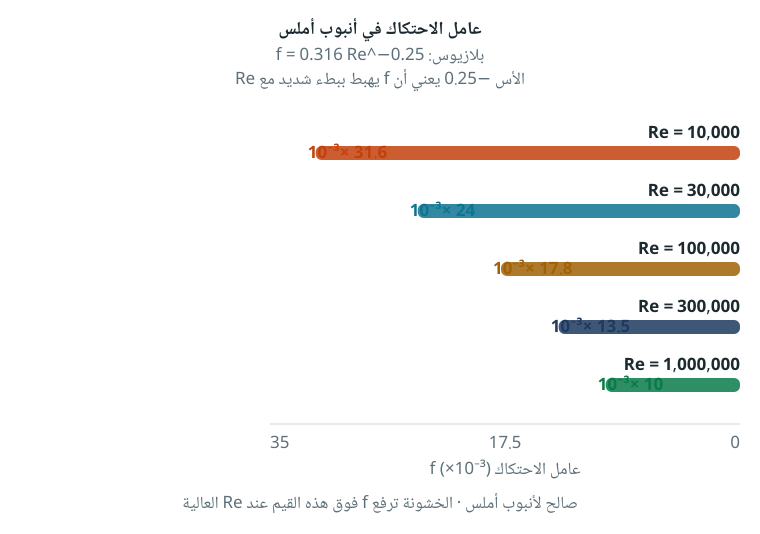

الجريان المضطرب
Turbulent Flow
نمط جريان تختلط فيه الطبقات بدوّامات تنقل الزخم عرضيًّا بمعدّل أعلى بمراتب من الانتشار الجزيئي، فيتسطّح مقطع السرعة ويرتفع إجهاد القصّ الجداري وعامل الاحتكاك وهبوط الضغط.
الجريان المضطرب نمط تختلط فيه الطبقات بدوّامات تنقل الزخم عرضيًّا بمعدّل أعلى بمراتب من الانتشار الجزيئي. النتيجة مقطع سرعة مسطّح في وسطه وتدرّج حادّ قرب الجدار، وارتفاع كبير في إجهاد القصّ الجداري، ومن ثمّ عامل احتكاك وهبوط ضغط أكبر من الجريان الصفحي عند التدفق نفسه.
يوصف المقطع تقريبيًّا بقانون القوة السُبعية: u/u_max = (1 − r/R)^(1/7)، ويعطي متوسط سرعة 0.817 من العظمى مقابل 0.5 في الصفحي. هذا التسطّح سبب مهم في أن المضطرب ينقل الحرارة والكتلة أفضل من الصفحي، وهو ما يُستثمر في المبادلات الحرارية وأفران الاحتراق.
يرتفع عامل الاحتكاك مع الخشونة، ويُحسب من مخطط مودي أو من معادلة كولبروك–وايت الضمنية، أو من تقريب بلازيوس للأنابيب الملساء f = 0.316 Re^−0.25.
كيف تعمل الظاهرة؟
تبدأ الاضطرابات من عدم استقرار طبقة القصّ القريبة من الجدار: تدرّج سرعة كبير ولزوجة نسبية ضعيفة يسمحان بظهور أزواج دوّامات طولية، تنقلب ثم تتفتّت إلى دوّامات أصغر حتى مقياس كولموغوروف حيث تُبدَّد الطاقة لزوجيًّا إلى حرارة. تنقل الدوّامات الكبيرة كتلًا من المائع بين المنطقة السريعة والبطيئة وبالعكس، فيصبح تبادل الزخم فعّالًا وكأن اللزوجة تضاعفت أضعافًا. هذا الإجهاد الرينولدزي −ρ⟨u′v′⟩ يُضاف إلى الإجهاد اللزوجي، ويفسّر ارتفاع مقاومة الاحتكاك رغم أن اللزوجة الجزيئية لم تتغيّر.
العلاقة بالأرقام
لعامل الاحتكاك بلازيوس عند Re = 24,900: f = 0.316 × 24,900^−0.25 = 0.0252. وبهبوط الضغط دارسي–فايسباخ في أنبوب 25 مم وطول 50 م وماء بسرعة 2.04 m/s: Δp = f (L/D)(ρv²/2) ≈ 87 kPa. ولأن f ∝ Re^−0.25 فإن Δp ∝ v^1.75 بدل التناسب الخطي في الصفحي؛ مضاعفة السرعة تضاعف الهبوط 2^1.75 ≈ 3.4 مرة. والخشونة النسبية: فولاذ تجاري بحدود 0.045 مم في أنبوب 25 مم يعطي ε/D = 0.0018، ويظهر أثرها فوق Re يقارب 10⁵.
مفاهيم متقاربة
الخلط الأول: وصف المضطرب بالعشوائي الكامل. له بنية إحصائية ثابتة: طبقة لزجة أسفل، ومنطقة انتقالية، ومنطقة لوغاريتمية يتناسب فيها متوسط السرعة مع لوغاريتم المسافة من الجدار. الثاني: اعتباره غير مرغوب دائمًا؛ في التبادل الحراري والخلط الكيميائي يرفع معاملات النقل بمراتب، فالتصميم يختاره رغم كلفة الضخ. الثالث: الخلط بين الخشونة المطلقة والنسبية؛ أنبوب خشن بقطر كبير قد يكون أملس هيدروليكيًّا، وأنبوب ناعم بقطر شعري خشن نسبيًّا، والعبرة في النسبة ε/D لا في قيمة ε وحدها.
حدود التطبيق
قانون القوة السُبعية تقريب للأنابيب عند Re بين 10⁴ و10⁵؛ فوق ذلك يميل المقطع إلى صورة لوغاريتمية أدق. ومعادلة كولبروك ضمنية ولا تميّز بين أنواع الخشونة، وتفشل في الأنابيب المطلية والمركّبة. نماذج الاضطراب الهندسية مثل k–ε وk–ω تعتمد على ثوابت معايرة وتضعف في الجريان الدوّار القوي، وفي فصل الطبقة الحدّية، وفي منطقة الانتقال، وتعطي نتائج متباعدة في الهندسات المعقّدة، ولهذا تُعاير تجريبيًّا أو تُستبدل بمحاكاة كبيرة الدوامات.

| الكمية | القيمة | المصدر |
|---|---|---|
| عامل الاحتكاك بلازيوس عند Re = 24,900 | 0.0252 بلا وحدة | [2] |
| نسبة متوسط السرعة إلى العظمى بقانون القوة السُبعية | 0.817 بلا وحدة | [1] |
| خشونة الفولاذ التجاري المطلية بالحدود الشائعة | 0.045 mm | [2] |
| الخشونة النسبية لفولاذ 0.045 مم في أنبوب 25 مم | 0.0018 بلا وحدة | [2] |
| مضاعف هبوط الضغط عند مضاعفة السرعة | 3.4 مرة | [2] |
المصادر
- 1 University Physics Volume 1 — 14.7 Viscosity and Turbulence — OpenStax. openstax.org/books/university-physics-volume-1/pages/14-7-viscosity-and-turbulence · اطُّلع عليه 2026-11-16
- 2 Darcy-Weisbach Pressure and Major Head Loss Equation — The Engineering ToolBox. www.engineeringtoolbox.com/darcy-weisbach-equation-d_646.html · اطُّلع عليه 2026-11-16
- 3 Reynolds Number — The Engineering ToolBox. www.engineeringtoolbox.com/reynolds-number-d_237.html · اطُّلع عليه 2026-11-16
استشهد بهذا المصطلح
الصيغتان مبنيتان من بيانات الصفحة نفسها: العنوان والتاريخ ورابط النسخة المنشورة.
الجريان المضطرب — Turbulent Flow. (2026). ديوان المعرفة — انفراد. https://infiradev.com/diwan/terms/turbulent-flow.html
@misc{turbulent-flow2026,
title = {الجريان المضطرب},
titleaddon = {Turbulent Flow},
howpublished = {{ديوان المعرفة — انفراد} — مرجع علمي عربي},
year = {2026},
url = {https://infiradev.com/diwan/terms/turbulent-flow.html},
urldate = {2026-11-16},
note = {مراجعة علمية: مراجعة آلية — ديوان المعرفة (روابط المصادر + عقد المحتوى + وجود الرسم) 2026-11-16}
}
راجعه: مراجعة آلية — ديوان المعرفة (روابط المصادر + عقد المحتوى + وجود الرسم) 2026-11-16 · 2026-11-16 · آخر تحديث 2026-11-16